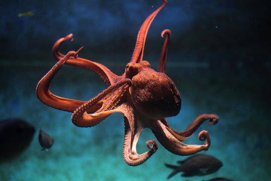

Info
Octopuses, fascinating inhabitants of the ocean, are creatures that
inspire wonder and intrigue. With their remarkable intelligence and
problem-solving abilities, they have captured the attention of
scientists and observers alike. Possessing a soft body and eight
flexible arms, each lined with suckers, octopuses are remarkably
dexterous, capable of manipulating objects with incredible precision.
Their incredible ability to change color and shape allows them to
blend seamlessly into their surroundings, enabling them to evade
predators and hunt stealthily. From their mesmerizing displays of
camouflaging to their intricate displays of problem-solving, octopuses
are truly marvels of the deep, embodying the marvels of evolution.
Nutrition
- Crustaceans
- Mollusks
- Fish
- Worms and Snails
- Crabs and other Cephalopods